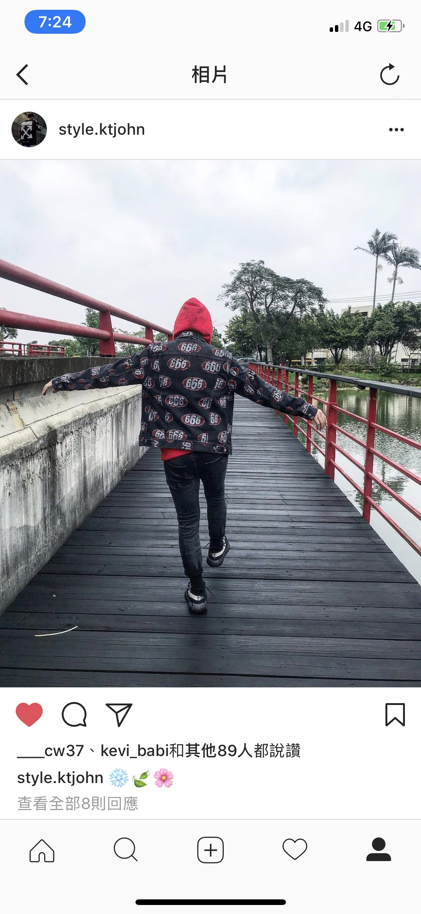
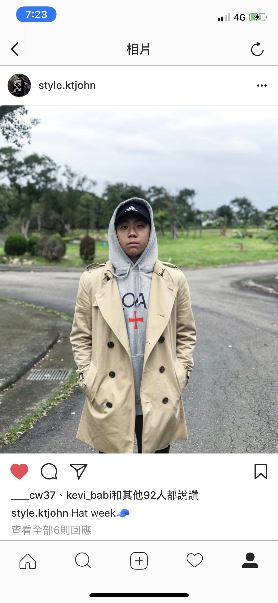
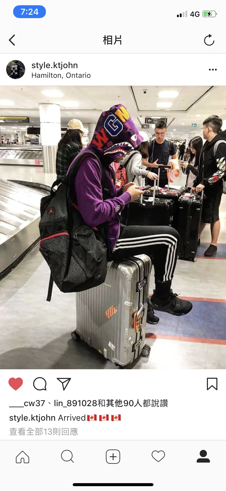
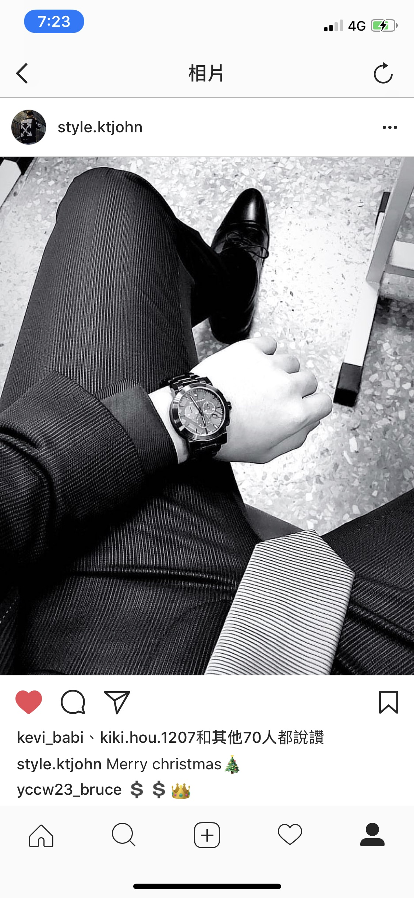
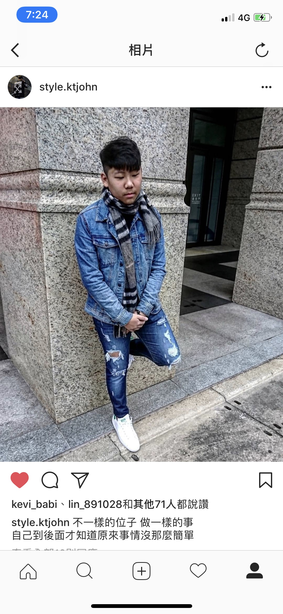
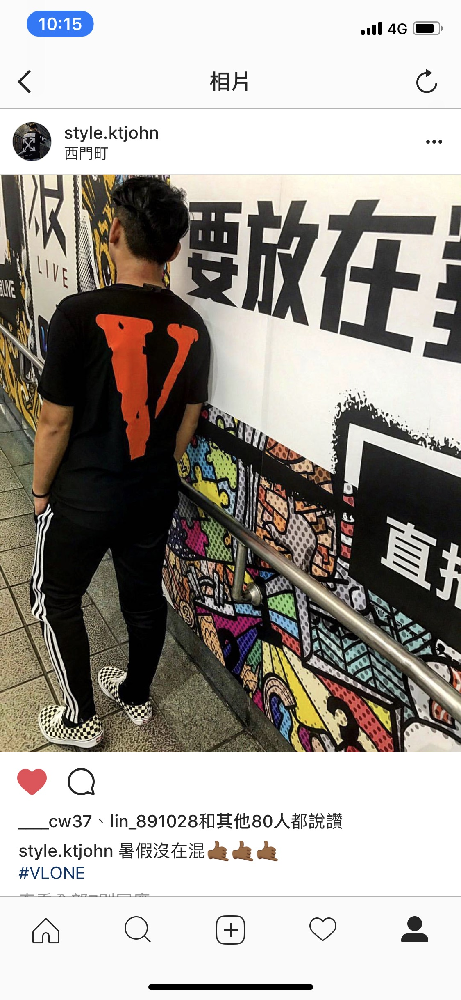
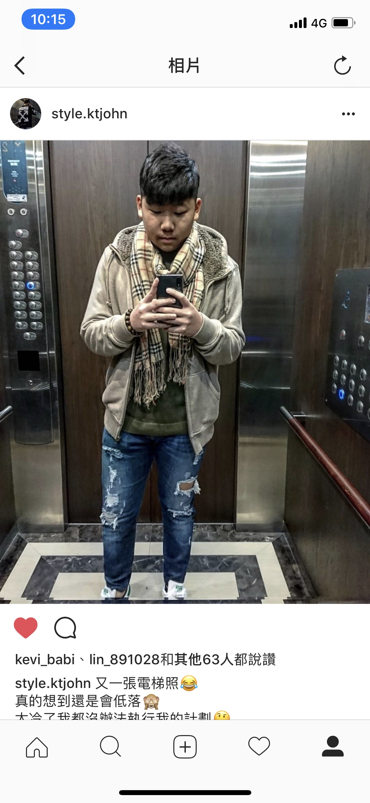

First outfit using orange vest and orange socks to show the unique

Second outfit wearing red hoodie and Supreme 666 denim jacket
Third outfit making a hoodie street wear into more formal by wearing Burberry overcoat
Fourth outfit wearing my favorite color- pink shirt with short jeans

Fifth outfit trying out the purple Bape shark jacket
Sixth outfit wearing a all black suit with a sliver tie for the christmas party
Seventh outfit wearing all denim using a darker jeans to make difference between the jacket and the pants
Eighth outfit trying to wear a little formal by wearing suit coat

Ninth outfit wearing that new VLONE T-shirt
Tenth outfit too cold outside wearing a Burberry scarf
